Oponentes
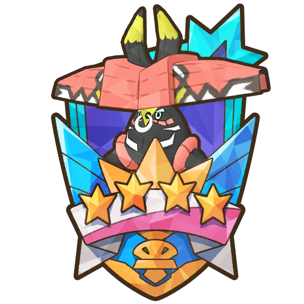
Tapu Bulu
Al principio de cada barra de PS y tras cada movimiento compi Tapu Bulu pondrá Campo de Hierba.
Cuidado con sus aumentos de Ataque y sus poderosos movimientos físicos. En la barra de PS 3 usará Mazazo al principio y despuñes de usar el movimiento compi.
Es recomendable evitar sus movimientos. Aumentar tu Evasión o disminuir su Precisión son buenas opciones.
Sabotearlo mediante retroceso y confusión también puede valer. Pero, cada vez que se recupera, su resistencia a estas aumenta hasta volverse inmune.
Más información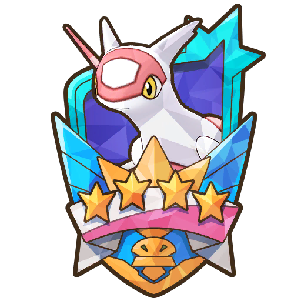
Latias
Cuanto más aumenten sus carácterísticas, menos daño recibirá.
A partir de la barra de PS 2, cada vez que esquive un movimiento, su Evasión aumentará. Sin embargo, cada golpe que reciba hará que su Evasión baje.
En la barra de PS 2, cuando sus PS bajan al 50%, aumenta su Evasión en 6 niveles.
Más información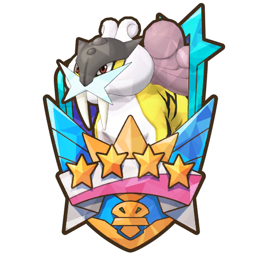
Raikou
Raikou viene acompañado de Ampharos (quien aumenta su Velocidad) y Electrode (quien aumenta la Velocidad de todo el equipo). A patir de la barra de PS 2, los movimientos y movimiento compi de Raikou aumentan su potencia cuanto mayor sea su Velocidad.
En la barra de PS 1 activa Daño especial ↓, en la barra de PS 2 activa Daño físico ↓ y en la barra de PS 3 invocará lluvia al principio y cuando sus PS bajen del 50%. Todos los efectos que active son permanentes.
Más informaciónCombates
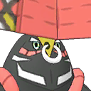
VS. Tapu Bulu
Comienza usando Día Soleado, pero reinicia si no recupera PM. Continúa con los movimientos de entrenador de Erika y luego empieza a atacar con Cuchilla Solar. Aprovecha el Campo de Hierba de Tapu Bulu para maximizar el daño de Leafeon y que se cure. En la barra de PS 2 no uses el movimiento compi de Leafeon, guárdalo hasta el inicio de la barra de PS 3. Eso sí, trata de que haya sol cuando Leafeon esté atacando.
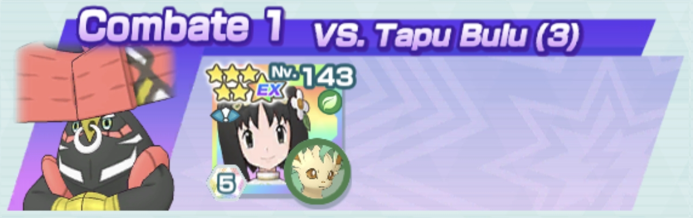
VS. Latias
Ataca todo el tiempo Rapidez. Usa Ataque Rápido cuando necesites recuperar PM en el movimiento de entrenador de Elaine. Derrota primero a Alakazam y después a Flygon. En la barra de PS 2 dependes más de Rapidez para no fallar tus movimientos y reducir la Evasión de Latias. Usa Protección al inicio de la barra de PS 3 o cuando Eevee flaquee y necesite una curación inmediata.
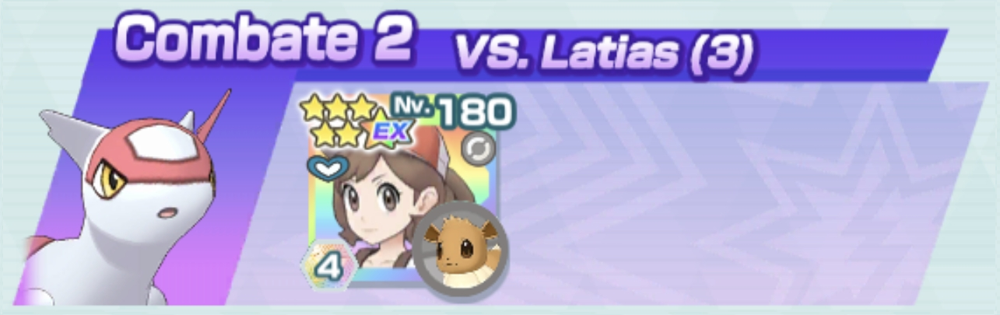
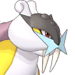
VS. Raikou
Comienza con el movimiento de entrenador de Adamas y derrota a Electrode a base de Hoja Aguda. A continuación, ataca a Raikou hasta cargar el movimiento compi para poder usarlo contra Ampharos y derrotarlo. Reserva el movimiento sincro para el inicio de las barras de PS 2 y 3. Usa Síntesis en los momentos oportunos y reza para que recupere PM en alguna ocasión. Si tienes el timing en la barra de PS 3 para usar el movimiento compi tras usar el movimiento sincro, la victoria será tuya.
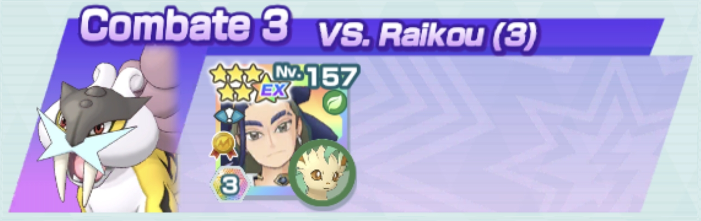
VS. Tapu Bulu
Reinicia si Elio no recupera PM en su movimiento de entrenador. Ataca con Psíquico de Espeon y, en la medida de lo posible, espera a usar su movimiento compi después del de Tapu Bulu para que el Campo Psíquico se imponga sobre el Campo de Hierba. Antes de acabar con la barra de PS 2, prepara un movimiento compi con Espeon así que ataca a Tapu Bulu poco a poco con Confusión. Así pues, inicia la barra de PS 3 con un movimiento compi. Vigila los PS de Espeon y usa Sol Matinal para una curación inmediata.
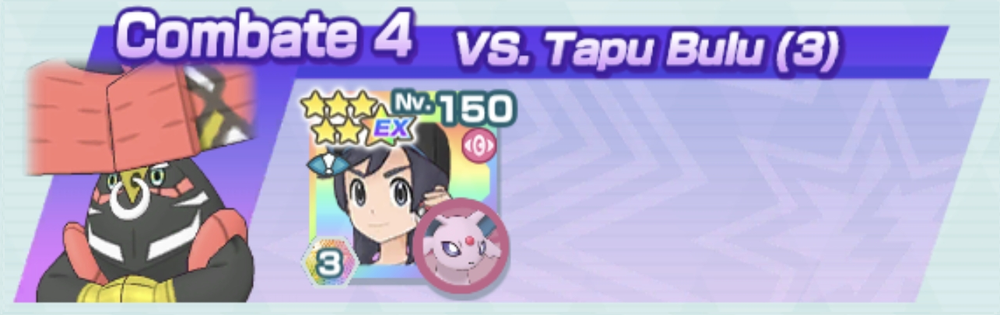
VS. Latias
Comienza atacando a Latias con Bola Sombra y Golpe Umbrío para reducir sus defensas. A continuación, usa el movimiento de entrenador. Como Alakazam te habrá atacado, usa Bola Sombra en Latias y luego en Flygon para hacerlos retroceder. Acaba con la barra de PS 1 con el movimiento compi. En la barra de PS 2, usa Bola Sombra dos veces y después el movimiento sincro. En la barra de PS 3 intenta anticiparte al Terremoto de Latias con Golpe Umbrío.
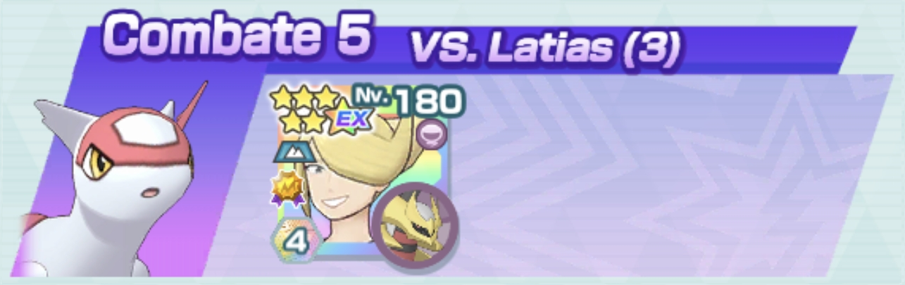
VS. Raikou
Hay que tener muy buen timing para lograrlo. Comienza buffando a Glaceon y usando todo el tiempo Viento Hielo para derrotar a Electrode y Ampharos. Cuando el contador de movimiento compi llegue a 2, se irá el granizo y la Zona Hielo así que vuelve a ponerlos. Reserva el movimiento sincro para la segunda mitad de la barra de PS 2. Pon de nuevo el granizo y la Zona Hielo al comienzo de la barra de PS 3.
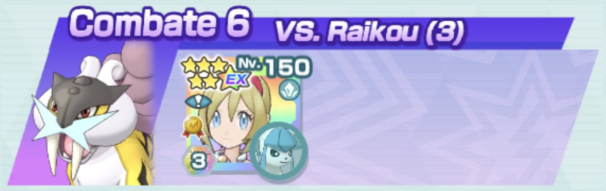
VS. Tapu Bulu
No es estrictamente necesario, pero puede venir bien que Erin recupere PM en su movimiento de entrenador. Como Annihilape es muy lento, es mejor que use Puño Drenaje después de haber recibido daño de Tapu Bulu. Pon los círculos al inicio de la barra de PS 2 y PS 3 respectivamente. Después de ponerlo en la barra de PS 3, fulmina a Tapu Bulu con el movimiento sincro.
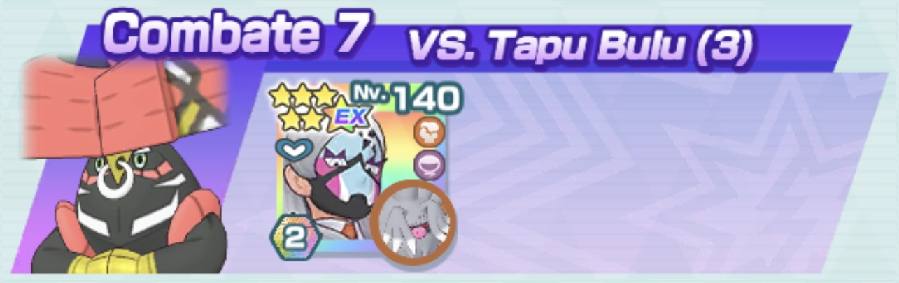
VS. Latias
Tras usar el movimiento de entrenador de Corin, ataca con Cañón Batidor para quemar a los Pokémon antes de que Latias use Velo Sagrado. Después puedes ir incordiándolos con Impreisonar para que retrocedan o continuar con Cañón Batidor para hacer más daño. Derrota primero a Alakazam y después a Flygon. En la barra de PS 2 prioriza Impresionar contra Latias para reducir su Evasión. Pon el Campo de Hierba cuando más te convenga, pero usa Teraexplosión en la barra de PS 3.
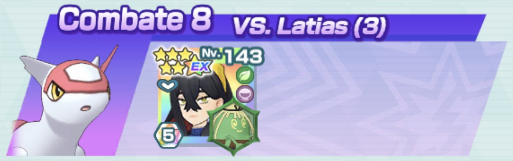
VS. Raikou
Comienza con Día Soleado seguido del movimiento de entrenador de Zarala. Pero, si no recupera PM, reinicia. Ejecuta todos los usos del movimiento sincro. Después, acribilla a los Pokémon a base de Recurrente. Derrota primero a Electrode y después a Ampharos. Reserva el otro uso de Día Soleado al inicio de la barra de PS 3.
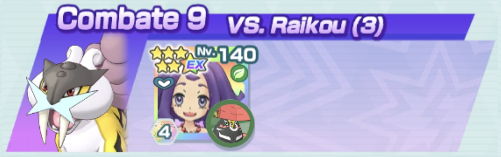
VS. Tapu Bulu
Apróvechate de su Campo de Hierba para bajar su Defensa a la vez que subes la tuya. Si te ves en apuros, usar Campo Psíquico para aumentar tu Defensa Especial. Campo Eléctrico para aumentar tu Velocidad es una buena opción. Usa el movimiento compi siempre que haya un campo activo.
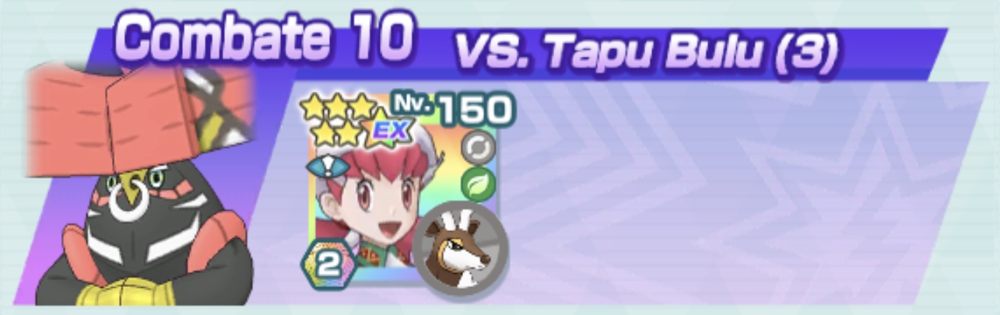
VS. Latias
Usa el movimiento de entrenador de Pola y, mientras dure la Zona Acero, usa el movimiento sincro de Steelix. Como es un movimiento en área, acabará derrotando a los Pokémon laterales. Cuando se vaya la Zona Acero, ataca con Cola Férrea.
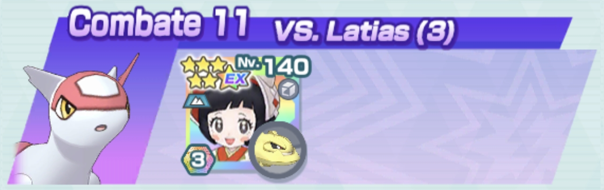
VS. Raikou
Usa todo el tiempo Danza Caos hasta atacar a Ampharos con el movimiento compi. Usa Danza Despertar en los Pokémon laterales en cuanto veas que vayan a caer. Continúa con Raikou usando Danza Despertar o Danza Caos si necesitas llenar la barra de movimientos. Es indispensable que Maya recupere PM en su movimiento de entrenador para aumentar la durabilidad de Oricorio.
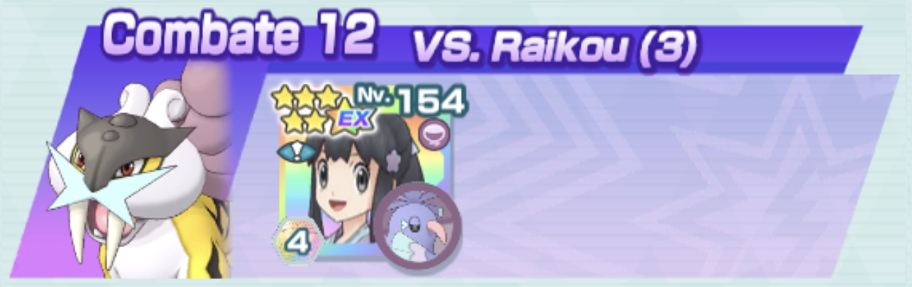
VS. Tapu Bulu
Después de usar el movimiento de entrenador de e-Nigma, tendrás que esperar a que se desbloquee el movimiento sincro para atacar a Tapu Bulu. Entretanto, usa Onda Anómala para que la habilidad fortuita se vaya activando y así subir la Defensa de Bellibolt. A mitad de la barra de PS 2 deberás dejar a Tapu Bulu atacar a Bellibolt hasta que acumule 10 cargas de Siguiente Especial ↑, así que a partir de aquí solo podrás atacarle con el movimiento compi. Nada más comenzar la barra de PS 3, el movimiento sincro fulminará a Tapu Bulu.
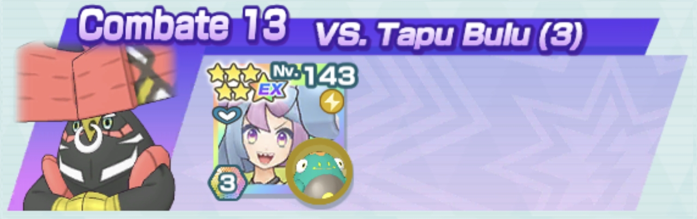
VS. Latias
Comienza reduciendo la Precisión de Latias hasta -3 y continúa bajando el contador con Electrotela. Usa el primer movimiento de entrenador antes del movimiento compi. Será necesario recuperar al menos un PM. Derrota primero a Flygon y luego a Alakazam. Vigila el daño y cúrate con Carga Parábola mientras continúas reduciendo las características de Latias. Al inicio de la barra de PS 3 Latias usará Terremoto, así que cúrate para solventar el daño que te hará.
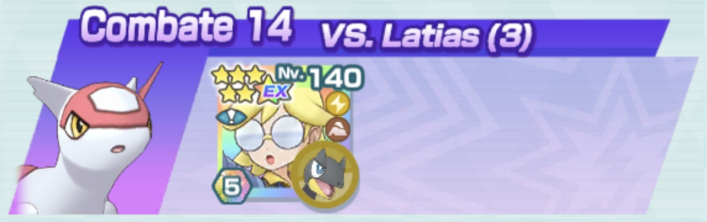
VS. Raikou
Primero ataca a Ampharos todo el tiempo con Poder Pasado hasta que Sigilyph tenga las características al máximo. Cuando Raikou use su primer movimiento compi, usa el movimiento de entrenador de Ástrid. Acaba con Electrode con un movimiento compi y con Ampharos con Poder Reserva. Continúa atacando a Raikou hasta derrotarlo. La dificultad del combate radica en la suerte de esquivar los movimientos y poder curarse debido a esos fallos.
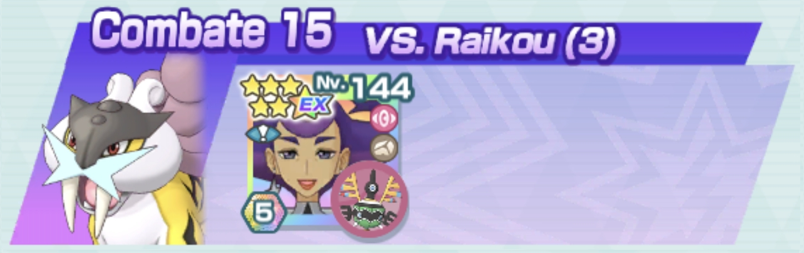
VS. Tapu Bulu
Lo más coñazo son los turnos previos al primer movimiento compi. Usa Nitrocarga hasta tener +6 de Velocidad, Directo+ para aumentar el crítico y luego el movimiento de entrenador. Si recupera PM, sigue el combate. De lo contrario, reinicia. Después es usar todo el tiempo Picotazo y atacar con el movimiento compi.
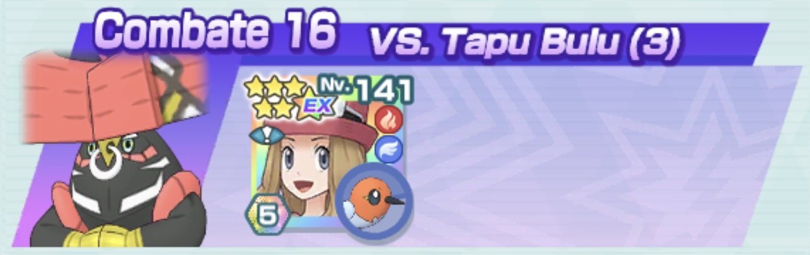
VS. Latias
Usa Vasto Impacto y, cuando Hydrapple sufra daño, usa el movimiento de entrenador de Cass. Tanto en la barra de PS 1 como en la 2 usa el movimiento sincro cuando el contador esté a 2 para usar inmediatamente después el movimiento compi contra Latias. A partir de ahí, ataca todo el tiempo con Teraexplosión. En la barra de PS 3 vuelve a usar el movimiento sincro en cuanto el sol y la Zona Lucha se vayan.
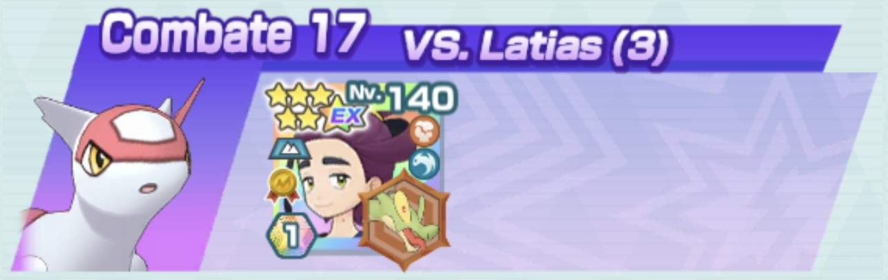
VS. Raikou
Usa el movimiento de entrenador de Cass y ataca con Teraexplosión hasta que el contador esté a 3. Coloca un círculo de Paldea y usa el movimiento compi. Fulmina la barra de PS 2 con Rayo Hielo y, en la barra de PS 3, usa Ventisca seguido de Teraexplosión para acabar el combate.
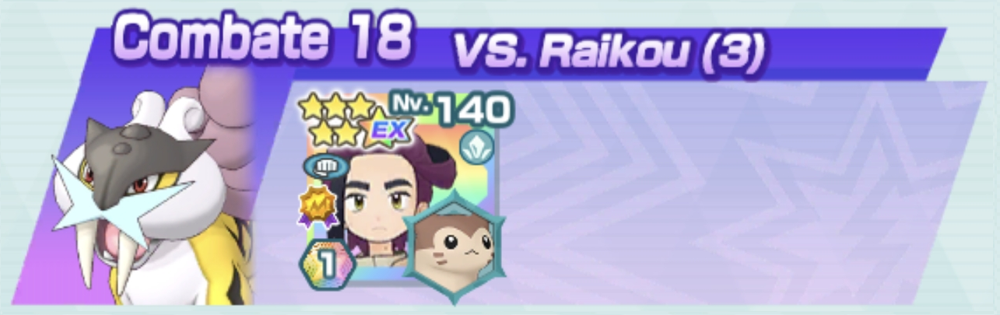
VS. Tapu Bulu
Simplemente recupera PM en Defensa X Múltiple, usa todo el tiempo Hoja Afilada y procura que haya Campo de Hierba al usar el movimiento compi. El daño de su movimiento compi es bestial para ser una unidad de apoyo.
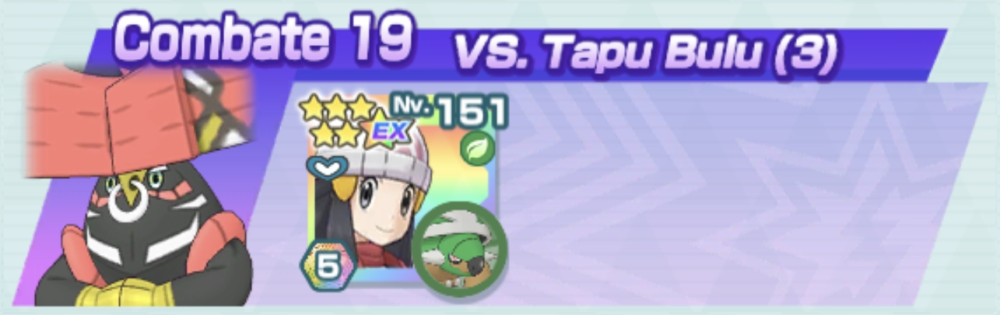
VS. Latias
Ataca con Rayo durante toda la barra de PS 1, usa Trueno Primigenio en la barra de PS 2 y, si en la barra de PS 3 Trueno Triunfal no acaba con Latias, hazlo con un movimiento compi. Siempre que tengas el movimiento compi úsalo y, si el Terremoto al inicio de la barra de PS 3 hace demasiado daño a Pikachu, usa las órdenes para que se recupere.
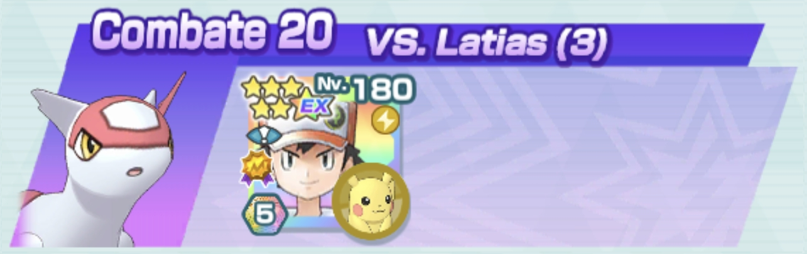
VS. Raikou
Usa todas las órdenes de Clavel pero, si no recupera PM en Evasión X, reinicia. Ataca primero a Electrode y acaba con Ampharos con el prime rmovimiento compi. Durante las barras de PS 1 y 2, alterma entre Danza Acuática y el movimiento sincro. Será a partir de la barra de PS 3 cuando podrás acumular Velocidad con Danza Acuática para acabar con Raikou con un poderoso movimiento sincro.
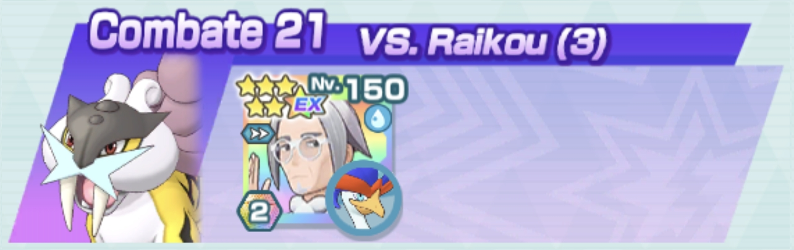
VS. Tapu Bulu
Lento pero posible. Ataca todo el tiempo con Látigo Cepa, aprovecha el Campo de Hierba para poder curarte sin recurrir tan pronto a las Minipociones Múltiples. Reserva Barrera Espinosa para protegerte de Mazazo en la barra de PS 3.
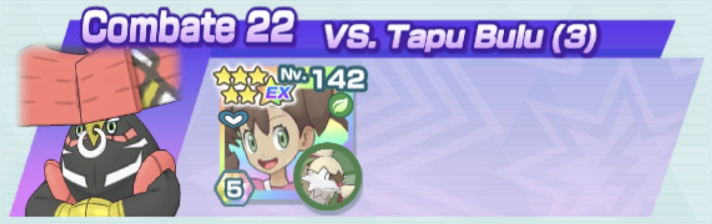
VS. Latias
Ataca todo el tiempo con Brillo Mágico para dañar a todos los oponentes. Cuando los PS de Xerneas bajen, usa Asta Drenaje contra Flygon y después contra Alakazam (derrótalos en ese orden). En la barra de PS 2 ataca con Brillo Mágico para poder reducir la Evasión de Latias todo lo posible porque puede entorpecer mucho el combate. Atento al Terremoto del inicio de la barra de PS 3.
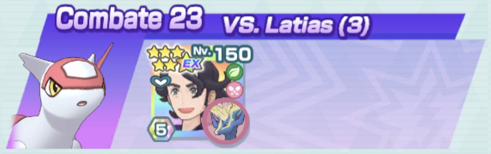
VS. Raikou
Empieza usando Velocidad X EX y después el movimiento de entrenador. Si no recupera PM, reinicia. Ve primero a por Electrode con el movimiento sincro y acaba con él. A continuación, derrota a Ampharos con el movimiento compi. Cuantas más veces hagas retroceder a Raikou más fácil será el combate.
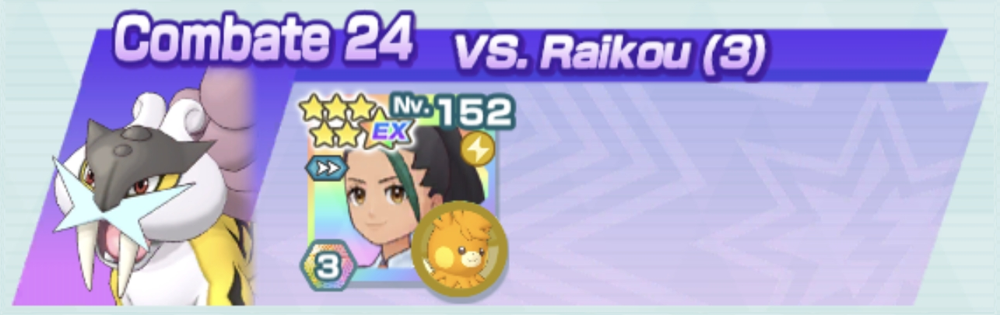
VS. Tapu Bulu
El inicio del combate es seguir el patrón de Vendaval Gélido, el movimiento sincro, el movimiento de entrenador, de nuevo el movimiento sincro y Vuelo. Al comenzar la barra de PS 2, usa el movimiento sincro, Vendaval Gélido y Vuelo para evitar el Bomba Germen de Tapu Bulu. Antes de que cambie la barra de PS 2 a la 3, deja pasar un rato desde el último movimiento de Tapu Bulu. Entonces, acaba con la barra de PS 2 con alguno de los movimientos de Tornadus, inicia la barra de PS 3 con Vuelo y así podrás esquivar el Mazazo de Tapu Bulu.
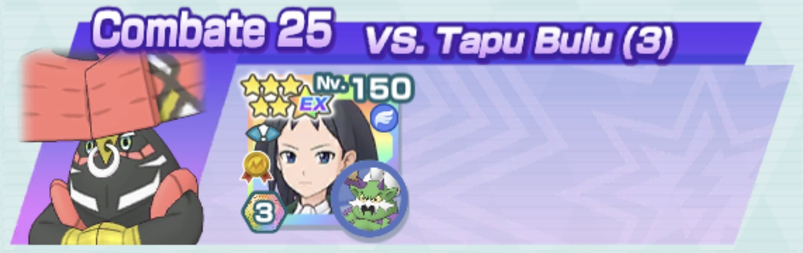
VS. Latias
Tras usar el movimiento de entrenador, ataca sin cesar con Espada Santa. Acaba primero con Alakazam y después con Flygon. Cuando se vaya el círculo, vuélvelo a poner. Reserva el movimiento sincro para la barra de PS 3.
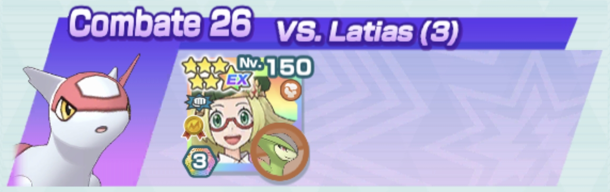
VS. Raikou
Comienza con el movimiento de entrenador de Liza, una Energía Potenciadora y acaba con Electrode de un Giga Impacto. Después, ataca a Ampharos hasta derrotarle. Tras el primer movimiento compi de Ferroverdor, usa otro tanque de Energía Potenciadora y sigue atacando a Raikou con Giga Impacto. Inicia la barra de PS 3 con el movimiento sincro.
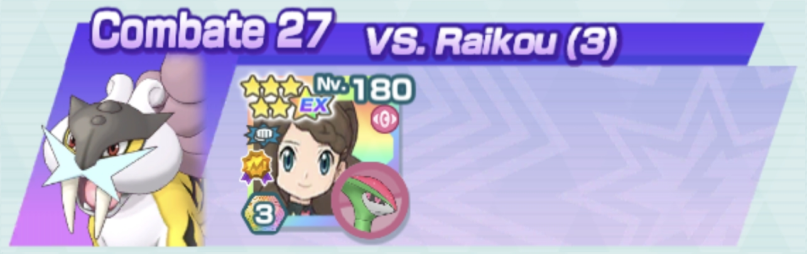
VS. Tapu Bulu
Usa el movimiento de entrenador y ataca sin cesar con Recurrente. Guarda las Pociones para momentos de apuro y Protección para el inicio de la barra de PS 3 para evitar el daño de Mazazo.
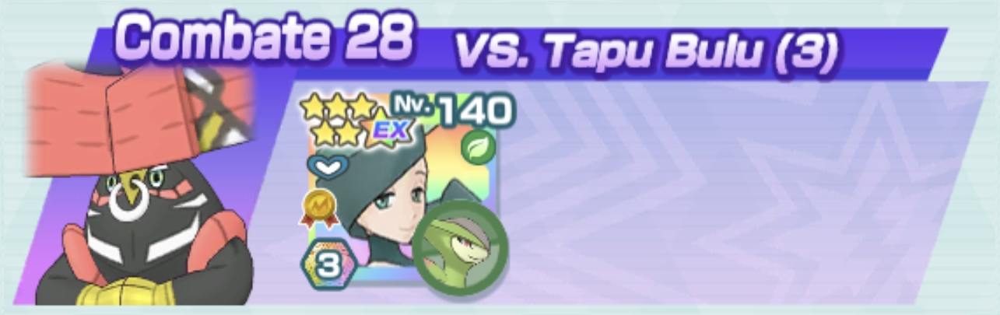
VS. Latias
Ataca a Latias con Rayo Hielo hasta reducir su Defensa Especial al máximo, luego usa Rugido de Guerra hasta reducir su ofensiva al máximo. Con el primer movimiento compi podrás acabar con la barra de PS 1 y los Pokémon laterales. En la barra de PS 2 vuelve a reducir las características de Latias. Una vez hecho, ataca con el movimiento sincro. En la barra de PS 3 vuelve a reducir la ofensiva de Latias, usa el movimiento de entrenador de Lucho y, si lo tienes a tu disposición, usa el movimiento compi de Kyurem para finalizar el combate.
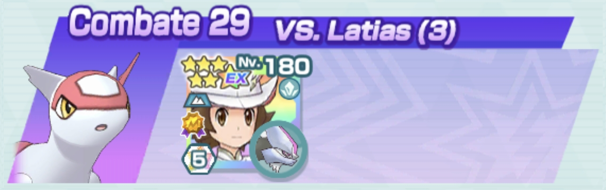
VS. Raikou
Usa los movimientos de entrenador (con 2 veces es suficiente) y confunde a todos los Pokémon. Acaba primero con Electrode y después con Ampharos. Cuando te toque enfrentar a Raikou mantenlo confuso y acribíllalo con Mirada Heladora.
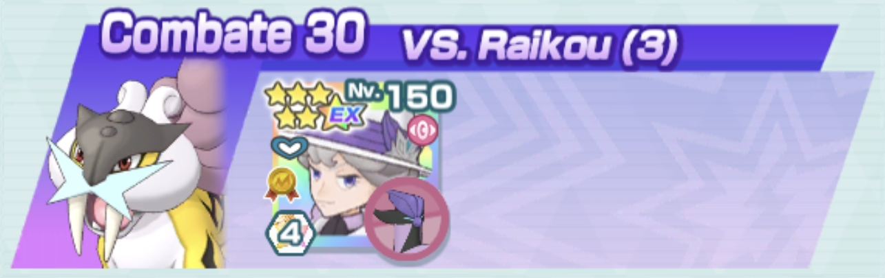
VS. Tapu Bulu
Comienza poniendo Campo Psíquico. Si no recupera PM, reinicia. Usa a continuación el movimiento de entrenador de Bel y ataca todo el tiempo con Poder Reserva. Inicia las barras de PS 2 y 3 usando Campo Psíquico. Sin embargo, durante la barra de PS 2, aunque tengas el movimiento compi listo, no lo uses y ataca con Poder Reserva hasta que Musharna pierda la regeneración de PS. Usa dicho movimiento compi en la barra de PS 3 tras activar el Campo Psíquico.
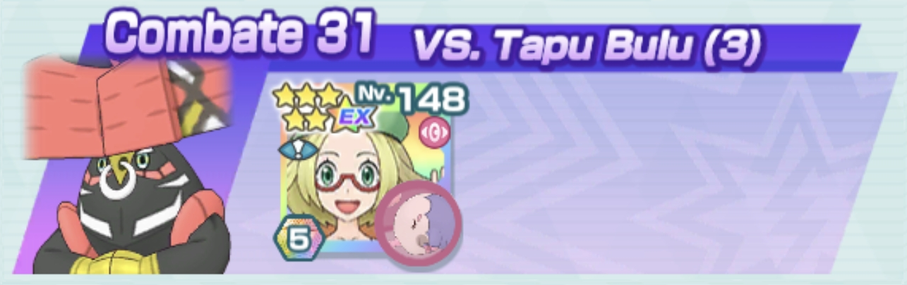
VS. Latias
Usa Rayo Umbrío, el movimiento de entrenador de Selene y el movimiento sincro. En la barra de PS 2, ataca con Rayo Umbrío hasta estabilizar la Evasión de Latias, intentando que los PS no bajen de la mitad. En la barra de PS 3, mediante otor uso del movimiento de entrenador y los ataques de Necrozma, trata de acabar el combate carganod el movimiento compi. El combate no peca de ser muy difícil, pero la Evasión de Latias puede torcer un poco la batalla.
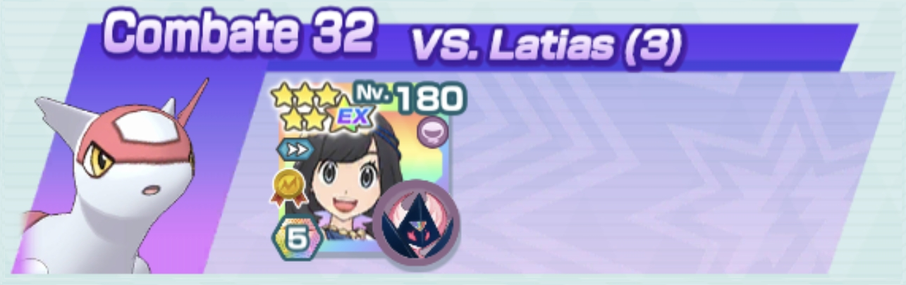
VS. Raikou
Comienza con el movimiento de entrenador de Roxy. Si no recupera PM, reinicia. Sin embargo, úsalo de nuevo tras un Furia Candente. Cada vez que actives el movimiento sincro, si tienes la barra de movimientos lo suficientemente llena, prioriza Furia Candente. Si Moltres se paraliza, es mejor volver a empezar.
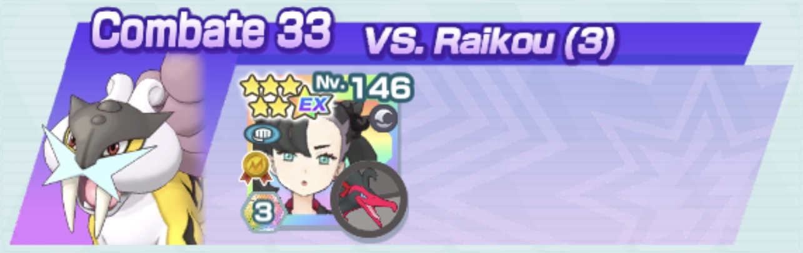
VS. Tapu Bulu
Una vez uses el movimiento de entrenador de Bruno, el resto del combate es acribillar a Tapu Bulu con Resplandor y el movimiento compi de Latios. Harán falta muchas Pociones, sobre todo en la barra de PS 3; ahí radica la dificultad del combate.
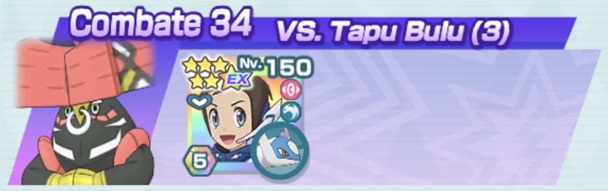
VS. Latias
Ignora a los Pokémon laterales. Ataca a Latias dos veces con Meteoimpacto antes de usar el movimiento de entrenador de Elio. Cuando uses el primer movimiento compi, si Latias no se ha debiltiado aún, no uses el movimiento sincro hasta la barra de PS 2. Ahí ya caerán Alakazam y Flygon. A partir de aquí es tener suerte y que no fallen los movimientos de Necrozma debido a la Evasión de Latias.
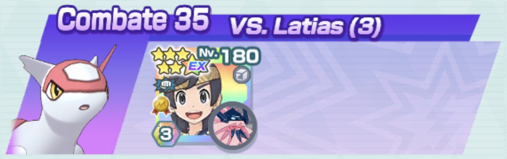
VS. Raikou
Usa el movimiento sincro nada más empezar para acabar con los Pokémon laterales. Al atacar a Raikou, usa Pulso Primigenio. Pero, si ves que la barra de movimientos puede resentirse, usa Trueno para activar el Siguiente Sin Coste. Si Raikou paraliza a Kyogre, el combate puede complicarse.
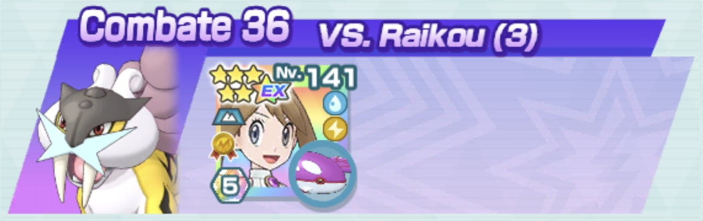
VS. Tapu Bulu
Usa todas las órdenes de Azul, pero debe recuperar PM una vez en cada una de ellas. Si no lo hace, reinicia. Ataca todo el tiempo con Hidrocañón y el movimiento compi de Blastoise.
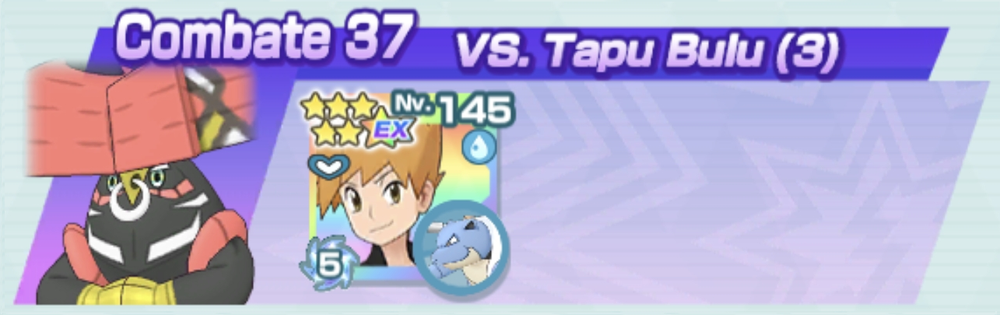
VS. Latias
Ataca todo el tiempo con Dragoaliento. No uses el primer movimiento compi hasta que hayas reducido la Evasión de Latias al máximo. Acto seguido, usa Distorsión para poder ejecutar otro movimiento compi consecutivo. Cuando veas que se vaya el círculo, invócalo de nuevo.
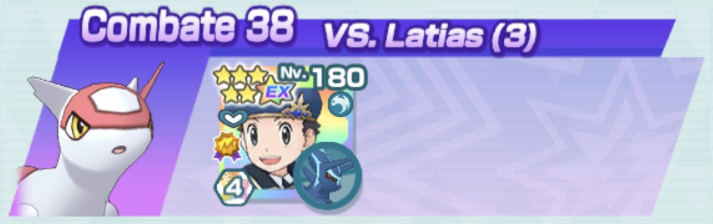
VS. Raikou
Comienza con Filo del Abismo, movimiento de entrenador y tras otro ataque acabas con los Pokémon de los lados. Continúa atacando cuando la barra lo permita ya que Groudon es algo lento. Cuando llegue el contador a 2 pon el círculo, usa Filo del Abismo e inicia la barra de PS 2 con el movimiento compi. Trata de activar el movimiento sincro sin consumir el Siguiente sin coste. A partir de aquí, ataca siempre antes que Raikou para que todo vaya bien
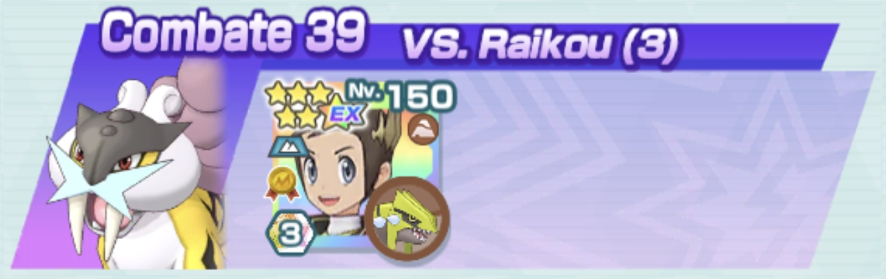
VS. Tapu Bulu
Usa el movimiento de entrenador. Si no recupera PM, reinicia. Usa seguidamente Evasión X. Reduce el Ataque de Tapu Bulu al máximo con Gruñido de Swellow. Usa de nuevo el movimiento de entrenador de Bruno cuando Swellow necesite regenerar PS. Cuando empiece la barra de PS 3, Tapu Bulu volverá a aumentar su Ataque así que usa Gruñido para contrarrestarlo.
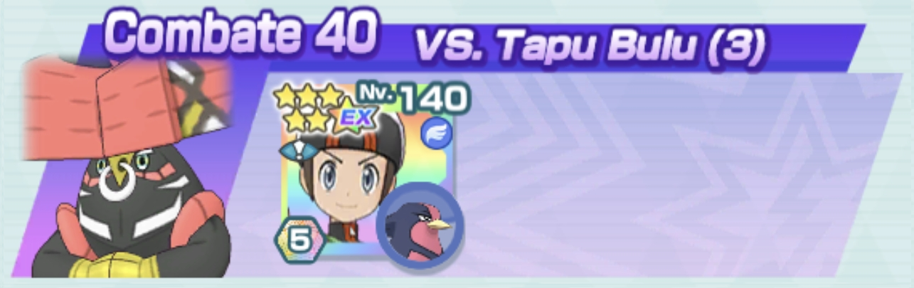
VS. Latias
Ataca repetidamente con Chispazo. Usa el movimiento de entrenador justo antes del segundo movimiento compi y el movimiento sincro antes de cambiar a la barra de PS 2. Esta barra será crucial, pues debes hacer todo lo posible para reducir al mínimo la Evasión de Latias.
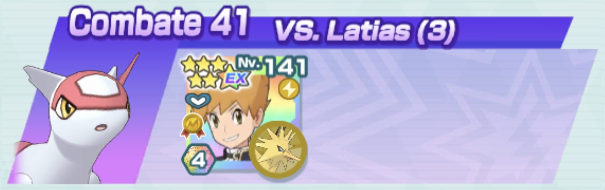
VS. Raikou
Acaba con Electrode y Ampharos con Ventisca y luego mantén congelado a Raikou con el movimiento sincro. No uses el movimiento compi hasta la barra de PS 2 para poder seguir usando el movimiento sincro. Al inicio de las barras de PS 2 y 3 puedes usar un Rayo Hielo extra antes de que se bloquee el movimiento para congelar a Raikou. Usa Protección al inicio de la barra de PS 3.
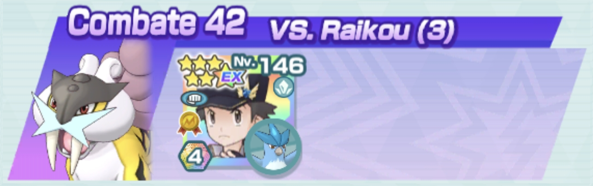
VS. Tapu Bulu
Usa el movimiento de entrenador y continúa atacando con Onda Vacío. Mientras Lucario se cure por su cuenta, intenta mantener las Pociones en la recámara hasta la barra de PS 3 donde pueden hacer más falta. Del mismo modo, usa el movimiento sincro en la barra de PS 3 y siempre y cuando haya Zona Lucha.
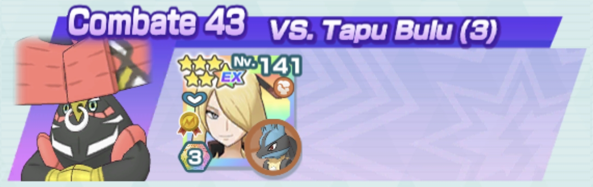
VS. Latias
Usa Malicioso hasta reducir el contador a 2, luego el movimiento de entrenador y el movimiento sincro contra Alakazam. Usa el movimiento compi contra Latias. En la barra de PS 2, derrota primero a Alakazam y luego a Flygon con el movimiento sincro. Cuando te quedes solo con Latias, es continuar usando Malicioso hasta atacar con el movimiento compi. Si consigues recuperar PM en la Poción es más viable.
VS. Raikou
Usa el movimiento de entrenador de Alik y reinicia si no recupera PM. Ataca con Fiebre Dorada hasta acabar con los Pokémon laterales y poder usar el movimiento compi. Usa el movimiento sincro en la barra de PS 2, después de volver a invocar el círculo. Cuando Gholdengo pierda la regeneración de PS, vuelve a usar el movimiento de entrenador. Haz igual con el círculo, pero puede que el combate acabe antes de que necesites otro más.
VS. Tapu Bulu
Empieza usando el movimiento de entrenador de Juliana y, si no recupera PM, reinicia. Úsalo de nuevo cuando Sprigatito pierda la regeneración de PS. Ataca todo el tiempo con Energibola y el movimiento compi. Mantén las Pociones hasta la barra de PS 3, pues los poderosos movimientos de Tapu Bulu pueden hacer mucho daño a Sprigatito.
VS. Latias
Ataca con Colmillo Rayo alternando entre los Pokémon para hacerlos retroceder y frenar así sus movimientos. Acaba primero con Raikou y después con Alakazam. Cuando se vaya el Campo Eléctrico del primer movimiento compi, invoca los siguientes con el movimiento sincro: uno en la barra de PS 2 y los otros dos en la barra de PS 3. Antes de empezar la barra de PS 3, usa Revivir Máximo por si el Terremoto de Latias lastima demasiado a Raikou. También puedes usar a continuación el movimiento de entrenador de Eco para recuperar PS.
VS. Raikou
Reinicia si Kalm no recupera PM en us movimiento de entrenador. Ataca todo el tiempo con Shuriken de Agua y mantén siempre a Greninja al tipo Agua. Derrota primero a Electrode y después a Ampharos. Usa los movimientos sincro cada vez que se activen y no haya lluvia. El combate depende de la suerte que tengas esquivando movimientos y curándote con tus ataques. Si todo marcha sin problemas, el combate no resulta complicado.